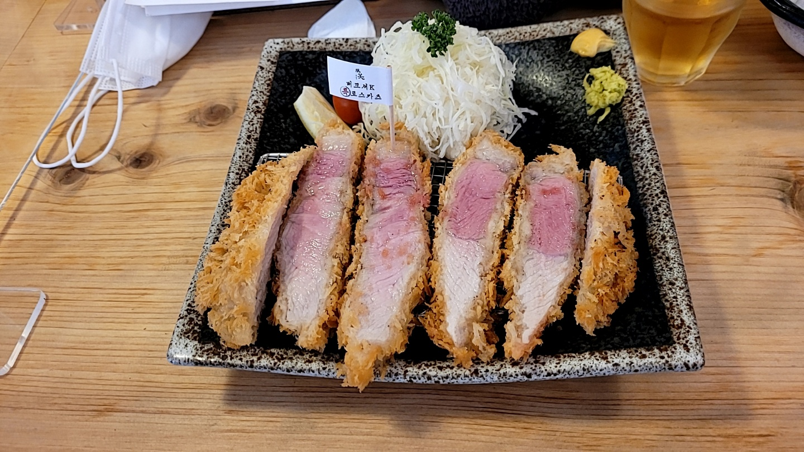

이름 : 설문혁
학번 : 19학번
학과 : 재료공학전공
시간이 나면 여기저기 여행가는 것을 좋아합니다. 사진은 올해 5월에 찍은 오륙도의 모습입니다. 섬들의 이름은 육지에서 가까운 것부터 방패섬, 솔섬, 수리섬(비석섬), 송곳섬, 굴섬, 등대섬입니다.
Facebook 방문하기
오륙도에서 잠시 있다가, 광안리로 가서 광안리의 돈까스 맛집인 톤쇼우에 가서 식사를 했습니다. 사진 밑에 배경 음악도 올려 봤습니다.

아래 동영상은 오륙도에서 찍은 고양이가 그루밍하는 동영상입니다.